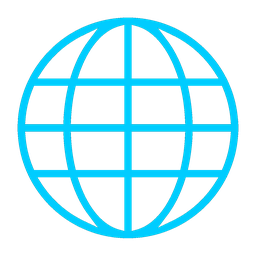

Diş Kliniğinizin
Dijital Üyesi.
DentFlow, hastalarınızın dilini otomatik olarak tespit eder. WhatsApp, Instagram, Messenger ve web sitenizde 7/24 iletişim kurar, randevu alır ve sorularını yanıtlar.
Hastanızın Dilinde
Otomatik dil algılar, hastanızın kendi dilinde iletişim kurar.
7/24 Ekibinizde
Gece gündüz, hafta sonu ve tatil demeden WhatsApp, Instagram, Messenger ve web sitenizde çalışır.
Kliniğinizi Tanır
Doktorlarınızı, hizmetlerinizi, çalışma saatlerinizi ve fiyat politikanızı bilir.
Tek Asistan, Beş Kanal
DentFlow her kanalda aynı bilgiyle, aynı özenle yanıtlar — hastanız nereden yazarsa yazsın.

Web Sitesi Widget'ıWeb Sitesi
Ziyaretçi sitenizde soru sorar, DentFlow anında ve doğal bir sohbetle yanıtlar — hiç beklemeden.
Hastalarınızın en çok kullandığı kanalda, WhatsApp üzerinden randevu alır ve sorularını yanıtlar.
DM'lerinize gelen mesajları karşılar, ilgiyi kaçırmadan randevuya dönüştürür.
Facebook Messenger
Facebook sayfanız üzerinden gelen mesajları yanıtlar, hastalarınızı hiç bekletmez.
Sesli Mod
Hastanız dilerse konuşur — DentFlow, Google Chirp 3: HD ile doğal ve insana yakın bir sesle yanıtlar.
DentFlow Farkı
Aynı klinik, aynı hastalar — tek fark, kim yanıt veriyor.
- Kaçırılan aramalar ve mesajlar
- Yavaş, saatler süren dönüşler
- Dil bariyeri nedeniyle kaybedilen hastalar
- Resepsiyonun tekrarlayan sorularla boğulması
- 7/24 kesintisiz yanıt
- Anında, doğal dilde yanıt
- Otomatik çoklu dil algılama
- Rutin soruları otomatik yanıtlar
KKTC ve uluslararası hastalar için geliştirildi
Bölgemizin çok dilli, çok kültürlü hasta profilini en iyi bilen dijital asistan — yerel hastalar kadar EU/UK sağlık turizmi hastalarına da hazır.
Güvenli ve Güvenilir
Hasta verileriniz en üst düzeyde koruma altındadır.
Ekibinizle Birlikte
Gerektiğinde gerçek zamanlı olarak ekibinize aktarır.
İş Yükünü Azaltır
Tekrarlayan soruları yanıtlar, ekibinizin zamanını kazandırır.
Daha Fazla Mutlu Hasta
Hızlı, doğru ve kolay iletişim hasta memnuniyetini artırır.